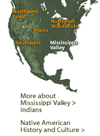
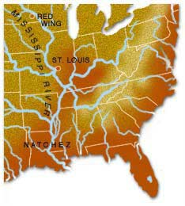

|
|
|  |
 Long before European explorers and traders came to North America, a succession of native societies flourished on the continent. We know little about them other than what archaeology has unearthed. Hunting and gathering societies existed in the Southeast as early as 12,000 B.C. Agriculture was developed later. Maize was grown in the Southwest during the first millennium B.C. By the fifth century A.D., a variety of corn known as hard flint maize spread across the Plains into the Mississippi Valley. Corn became a staple and was intensively cultivated throughout the Midwest and eastern Woodlands after A.D. 800. The cultivation of corn in the flood plains of the Mississippi
River Valley made possible the development of a civilization that stretched west to Oklahoma,
southeast to the Gulf, and northward into Wisconsin. Later, another staple crop was added. Beans,
first introduced to the Mississippi Valley around A.D. 1000, were in common usage by A.D. 1200.
The two crops helped to foster densely populated centers out of which grew complex political and
social organizations and far-reaching trade networks.
More about Mississippi Valley Indians |
 |
||
|
|
|
|